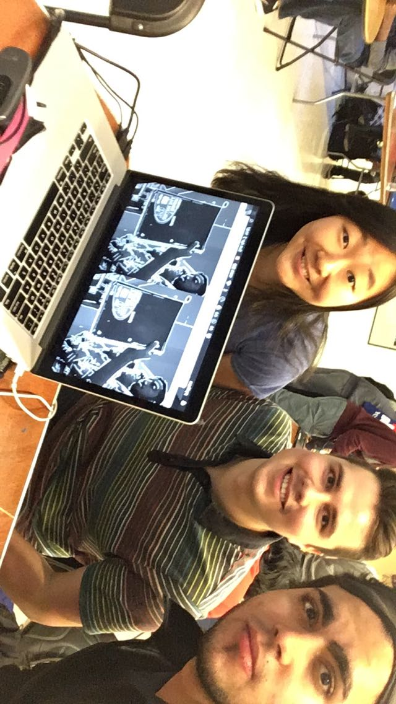

topic: ai ×+ security+ systems+ lifesort: newest ▾
DEEP DIVE
Phone number tracing with software tools — the complete guide
OSINT from first principles: carriers, SS7, HLR lookups, and what actually works in 2026.
18 min · jul '26
ML NOTES
Attention, from scratch, three ways
My working notes: numpy → einsum → the KV-cache view. With scribbles.
12 min · jun '26
PAPER NOTES
"Attention Is All You Need" — annotated, 9 years on
The paper that started it, with margin notes on what held up and what didn't.
8 min · jun '26
OPEN IDEA
Idea #11: an eval marketplace for agent tools
Free to build. Why it might work, why it might not, and how I'd start.
6 min · may '26
REFLECTION
On leaving big tech twice
A short escript on comfort, and the price of it.
3 min · may '26
BOOK
The Design of Everyday Things — full summary + margin notes
Norman's principles, mapped to software I've actually shipped.
14 min · apr '26
One layout swallows your entire list: every entry is a markdown file with a type (colored badge) and topics (filter chips). Adding "Sora work" or a new shelf later = one new type tag, zero new pages. Search, filters and shelves are all client-side.
5bINTERACTIVE RESUME — looks like paper, every line is clickable proof
~/resume
anything dashed is clickable · download PDF
Mostafa Okasha
mostafa@okasha.me · okasha.me
Software Engineer — AI applications & consulting
EXPERIENCE
Meta2022 — 2025
Software Engineer
Built internal tooling used by 2,000+ engineers
Led reliability work on a tier-1 service
Capital One2020 — 2022
Software Engineer
Discovered & fixed FX conversion bug saving ~$10M/year
Shipped ML-driven fraud rules to production
Ericsson2018 — 2020
Software Engineer, 5G RAN
5G scheduler code running on live carrier networks
EDUCATION
McMaster University — B.Eng, Mechatronics2014 — 2019
YOU CLICKED: ~$10M/YEAR
The $10M spreadsheet
A currency-conversion rounding rule, applied at the wrong step, across millions of daily transactions. Nobody's job to notice. The full war story — how I found it, proved it, and what it taught me about auditing money systems.
read the story →system diagram
Every dashed phrase opens proof: a story from the Library, a repo, a demo, or a system-design diagram from the Workshop. The resume becomes the index of everything else.
Prefer the human version? → about me, the long way
The resume IS the navigation: pixel-faithful paper layout, but every dashed claim opens its receipts in the side panel — war stories, repos, demos, diagrams. Print/PDF stays one click away.
5cSKILLS & SYSTEMS — click a skill, get the dossier; system-design diagrams live here too
Every icon opens a dossier: years, projects it shipped, and where it lives in the archive.
Py
Python
8 yrs
TS
TypeScript
6 yrs
C++
C++
4 yrs
λ
AWS
6 yrs
⚛
React
6 yrs
◎
LLM / agents
3 yrs
⚙
CAD / NX
7 yrs
📷
Photography
10 yrs
SYSTEM DESIGNS
ChessMate pipeline
vision → engine → arm control
Fraud-rule serving
stream → features → decisions
DOSSIER
PyPythonsince 2018
2018–19McMaster — robotics control, OpenCV for ChessMate
2020–22Capital One — fraud pipelines, the $10M audit
2022–25Meta — internal tooling at scale
nowAgent backends for consulting clients — see AI Lab
SHIPS WITH
numpyfastapipytorchopencv
8 entries in the Library are tagged python — the dossier links straight into them.
Exactly what you described: skills as icons, click → dossier with years, timeline of where each skill shipped, and links into the Library. System-design diagrams sit on the same page as interactive cards (pan/zoom on open).
4aTHE EXPEDITION — a living landscape; click the chapters to fly somewhere else
Hello! 👋
I'm Mostafa Okasha
Engineer @ my own thing
Previously at Meta, Capital One and Ericsson — where my 5G code runs for millions. Now I build AI applications, consult, and document all of it here: the code, the CAD, the prompts, the photographs.
Your original layout, resurrected — centered M, mono greeting with colored words, links exactly where they were, crescent photo, typewriter — but the background is now a living painted world: drifting clouds, a plane crossing with its contrail, rolling ocean swell, wind-blown dunes, snow-lit peaks. Everything moves with your cursor; the four chapters fly the whole scene somewhere new.
3aHOME — navy + mint (your original palette), calm confidence, mesmerizing sky kept
Engineer — ex-Meta, Capital One & Ericsson. These days I build AI applications and consult. Everything I make — code, writing, CAD, prompts, photos — ends up here.
explore the archiveor press ⌘K
LATEST FROM THE ARCHIVE
AI LAB · JUL 02
Agent memory patterns that actually work
WRITING · JUN 03
ChessMate, five years later: a retrospective
DESIGN · MAY 12
Desktop CNC: designed + machined from scratch
01 · WRITING
24 essays & notes
02 · PROJECTS
12 shipped
03 · DESIGN
CAD & identity
04 · AI LAB
17 workflows & prompts
05 · PHOTOS
31 stories
Your original navy + mint palette, kept. Tone dialed way back — no headshot on the homepage, one status pill (the piece you liked), and an aurora particle-flow canvas behind everything: slow mint ribbons drifting through the navy, reacting gently to the cursor.
Engineer — ex-Meta, Capital One & Ericsson. Code, writing, CAD, prompts, photos: it all lives here.
explore the archive
01 writing×24 →
02 projects×12 →
03 ai lab×17 →
×
01writing×24
02projects×12
03design×9
04ai lab×17
05photos×31
06about
githublinkedinemail⌘K search
← ai lab4 min left
AI LAB · JUL 02 2026 · 9 MIN
Agent memory patterns that actually work
Most agent frameworks treat memory as an afterthought — a vector store bolted on at the end. After six months of running agents in production, I've settled on five patterns that survived contact with real users.
The first: scoped scratchpads. Give the agent a place to think that gets wiped per-task, and a much smaller…
PROMPT RECIPE — copy & steal
You maintain two memories: 1. TASK — wiped after each task 2. CORE — 10 facts max, evict oldest…
The site as it'll feel on your phone: home with 44px+ tap targets, a full-screen menu in the big-type style, and the reading view with progress bar and copyable prompt-recipe blocks for the AI lab.
A living wireframe globe spins behind the hero — arcs fire between cities you've been, particles orbit, it reacts to the cursor. Your face front-and-center in a polaroid stack. Loud, warm, and personal.
Currently building AI applications & consulting for teams that want LLMs in production, not in decks. The AI Lab has the receipts — 17 workflows & prompt recipes, free to steal.
03 · Atoms
mechatronics degree
CAD & product design — NX, SolidWorks
Robotics & CNC — built, not bought

Embedded & sensors — OpenCV, Pi, Arduino
Software is easy to undo. Hardware keeps you honest.
04 · People — the real stack
taught 200+ students3 languageswill befriend your barista
Skills reframed as "the toolkit" — honest meters, sticker chips, real photos of the hardware work, and a wink of personality in the copy.
2cDESIGN GALLERY — "made real", drafting-table energy
Six months of production agents, distilled into 5 patterns.
ai lab
jun 18 '26
Cairo, code & carrying a camera everywhere
Working remotely from the city my parents left. Notes + 38 photos.
travel
jun 03 '26
ChessMate, five years later: a retrospective
What building a chess robot taught me about shipping AI products.
engineering
may 21 '26
The $10M spreadsheet: a banking war story
How currency conversion losses hide in plain sight.
engineering
your correspondent, on location
// now
Building an AI consulting practice · learning film photography · plotting the next trip · reading "The Design of Everyday Things" (again)
Get new notes by email — no spam, ~1/month.
you@email.comjoin
Blog as a travel journal: dated entries, category filters (engineering / ai lab / travel / life), a "now" card, and your polaroid as the correspondent. Markdown files drop straight into this layout.
1aTHE OBSERVATORY — generative night sky, editorial serif
Mostafa Okasha builds software, machines & the occasional bad idea that works.
Engineer, ex-Meta & Capital One. Currently building AI applications, consulting, and collecting everything I make in one place — right here.
01 · WRITING
Essays, engineering notes, AI experiments
02 · PROJECTS
ChessMate, EyeSee, and what's next
03 · AI LAB
Workflows, prompts & agent recipes
04 · DESIGN
CAD, identity & photography
Live particle sky drifts slowly and reacts to the cursor. Serif headline gives it an editorial, confident voice — the "observatory" where all your work is catalogued.
1bTHE GARDEN — a living map of everything you make
the garden of mostafa okasha
78 things growing · last planted 2d ago
Everything I make lives on this map.
Essays, code, CAD, prompts, photographs — each one a node. Click anything. Follow the threads between them.
The homepage IS the sitemap — a force-directed graph you can drag, zoom, and click. New content grows new nodes. Deeply personal, endlessly explorable, and unlike any portfolio out there.
Zero images, all voice. Loads instantly, scales perfectly to mobile (the type just reflows), and the terminal prompt doubles as a real command palette. The boldest and lightest of the three.